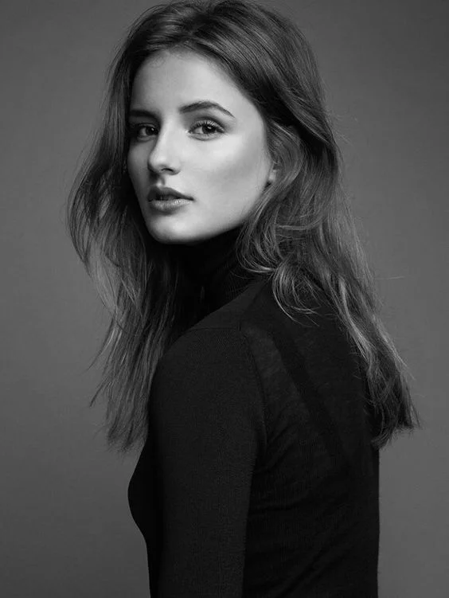
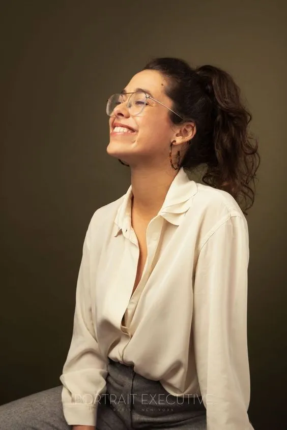
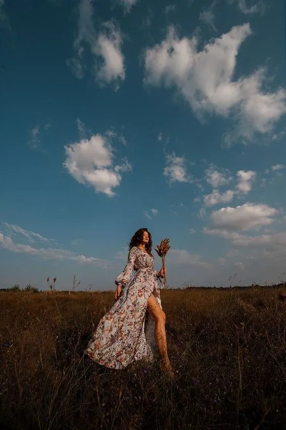
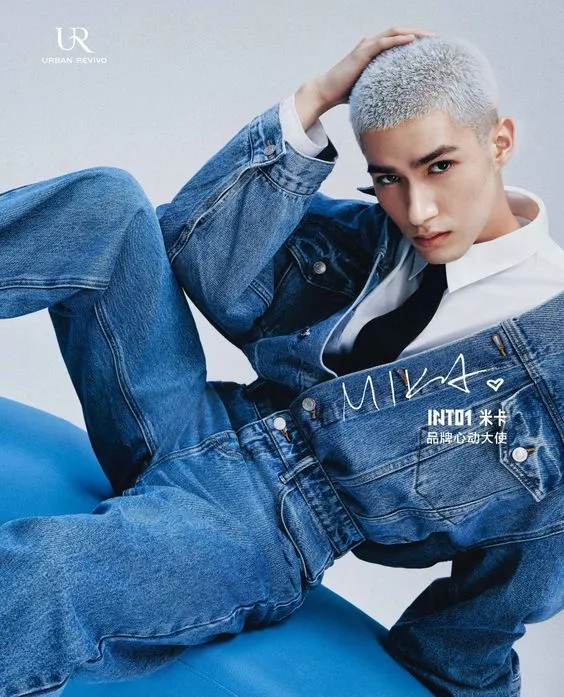
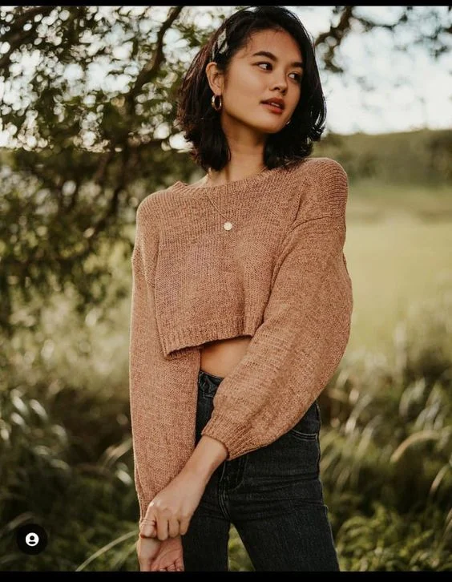
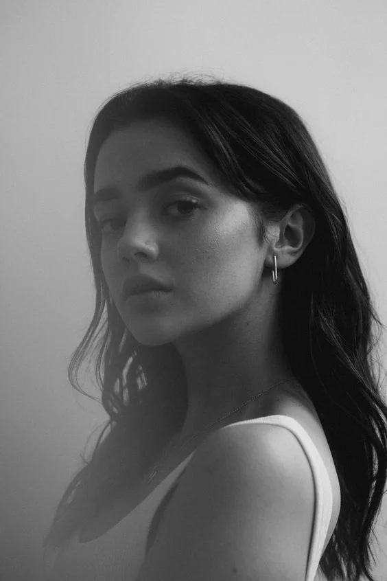
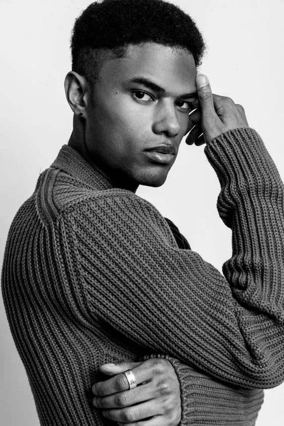
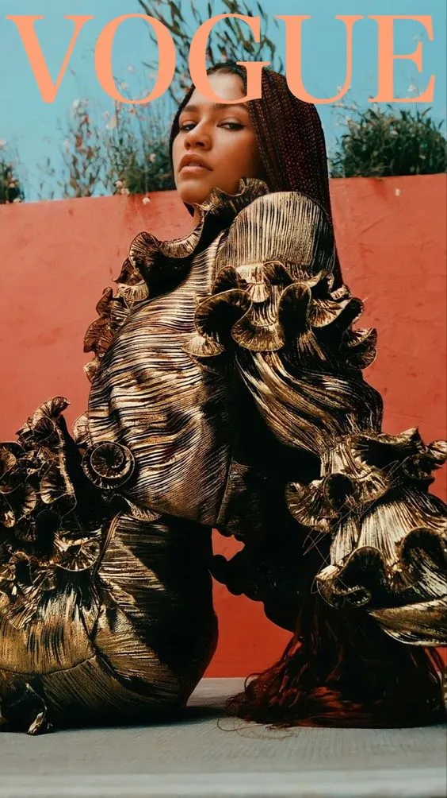
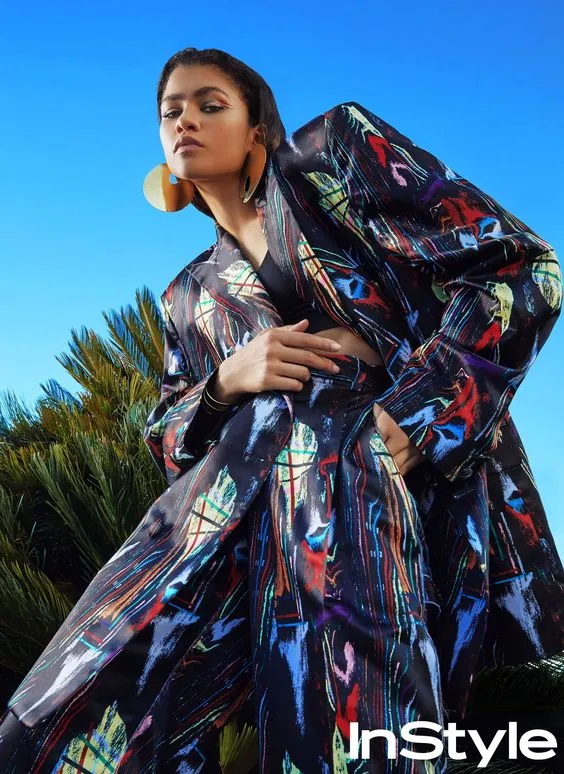
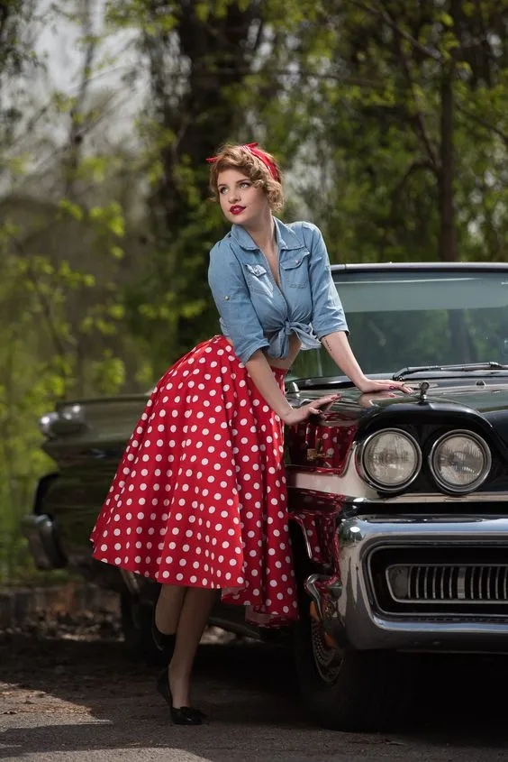

Fashion Magazine


ALL
A
C
D
E
F
G
H
I
J
K
L
M
N
O
P
Q
R
S
T
U
V
W
X
Y
Z
Fashion Frontier

Meet Ava Sterling, a rising star in the fashion world whose presence on the runway.
A unique blend of charisma and elegance, showcasing the latest trends with effortless poise. From haute couture to street chic, they turn every outfit into a statement.

Maison ARTC: memories and culture, the base of futuristic fashion awareness. Tilila Oulhaj look

Updates
MENS
FASHION
Khadim & Tom Ford
25TH MARCH 2024
WOMENS
FASHION

Arena Homme
3Rd FEBRUARY 2024
SPECIAL
VIEW

Jing for WOnderland
14TH JANUARY 2024
MODELS
TALK

Glass X Belle
20TH MARCH 2024

Trend Trek
Fashion icons like Karl Lagerfeld, Coco Chanel, and Anna Wintour have left indelible marks on the fashion world with their signature styles. Whether it’s Chanel’s little black dress or Lagerfeld’s penchant for monochrome.
Fashion icons like Karl Lagerfeld, Coco Chanel, and Anna Wintour have left indelible marks on the fashion world with their signature styles.


Pinnacle 2024
Pinnacle 2024
Pinnacle 2024
Pinnacle 2024
Pinnacle 2024
Pinnacle 2024
Blog
Playful Prints
This season is all about making a statement with color and pattern. Bright, saturated hues like emerald green, electric blue, and fiery red are making waves, bringing a burst of energy to the cooler months.

Return of Retro
Nostalgia reigns supreme with a resurgence of retro styles. Channel the '70s with flared jeans and suede jackets, or embrace the '90s with chunky sneakers and crop tops.
